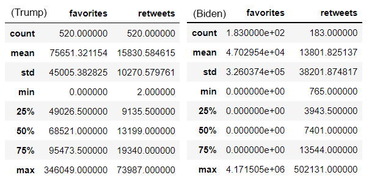
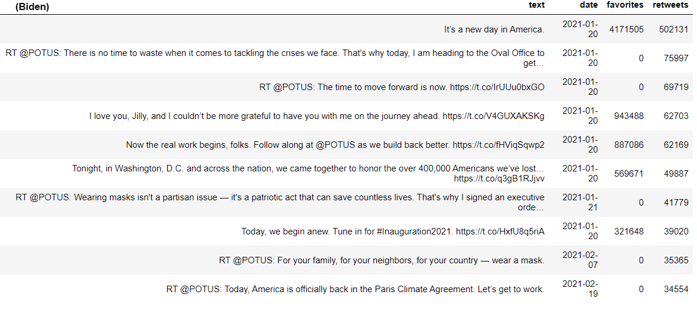
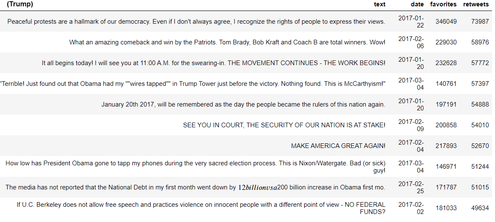
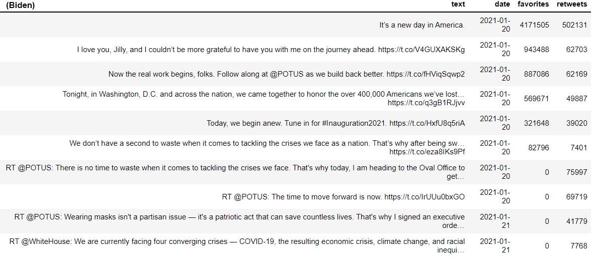
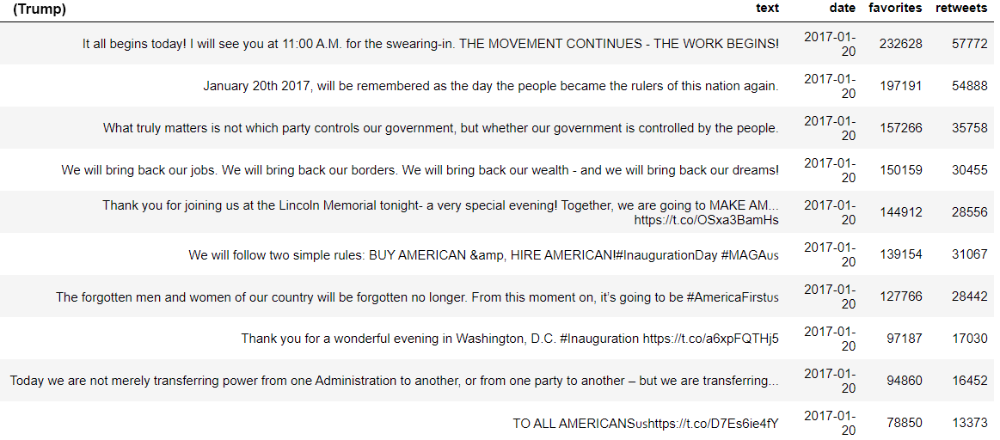
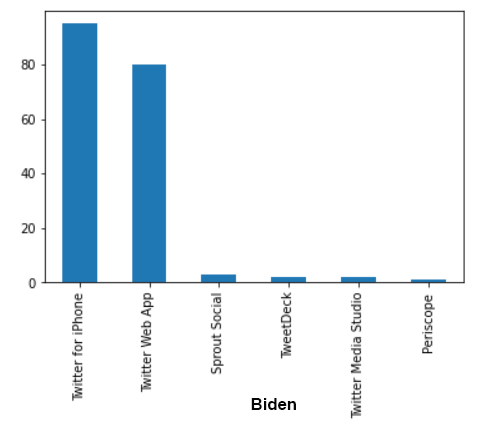
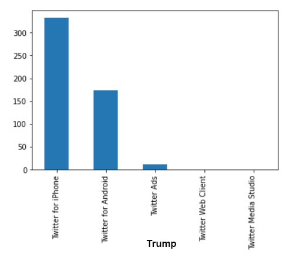
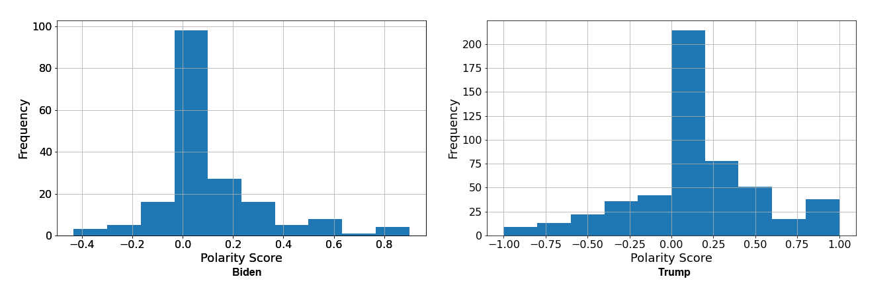

In the United States of America, the first 100 days of a presidential term has symbolic significance. This is when a president's specific priorities are defined and parlayed. It is also considered an early indicator to measure their success.
The term was originally coined in 1933 by Franklin Delano Roosevelt when he passed 76 laws during his first 100 days. While we won't be looking at their accomplishments during this time, we will consider the messaging of each politician. We want to explore the tone of each politician during this important period, also known as the "honeymoon" period of a presidency. To do this, we will take a look at the Tweets made during the first 100 days for each politician to see how objective and postive each president was.
With the help of Natural Language Processing (NLP) techniques, we will explore Twitter data using textual featurization, sentiment analysis and word cloud visualizations.
The following work employs data from Kaggle, as well as data collected from Twitter using Tweepy. Tweepy is a Python library that allows you to access the Twitter API with a Twitter Developer account and access credentials. The data for Donald Trump is a dataset shared on Kaggle and includes all of his Tweets prior to his account being frozen. The data for Joe Biden was accessed via the Twitter API. Data were cleaned and formatted for analysis using various Python libraries (detailed in Notebooks). Data and Jupyter Notebooks used for the analysis are accessible via the Github link at the bottom of this page.
Exploratory Data Analysis
The main purpose of exploratory data analysis is to better understand the data, look for any patterns, find interesting relationships among the different variables and brainstorm questions about it.
Data for each candidate was cleaned and analysed using Python and associated libraries in Jupyter notebooks. Tweets for the first 100 days were queried for each candidate. January 20-April 30, 2017 for Donald Trump and January 20-April 30, 2021, for Joe Biden.
As a first step, we look at some statistics of the tweets for each politician. The data below are snapshots of the results of the Pandas built-in function df.describe() for the numerical fields in the datasets.
I guess not so surprisingly, Donald Trump's number of tweets in the first 100 days (520) is significantly greater than that of Joe Biden (183).
[INSERT STATEMENT ABOUT IMPORTANCE OF A RETWEET.] Let's review the top 10 most re-tweeted tweets for each.
Insert analysis of Joe Biden Retweets.....
Insert analysis of Donald Trump Retweets.....
[INSERT STATEMENT ABOUT IMPORTANCE OF A FAVORITED TWEET.]Let's review the top 10 most favorited tweets for each.
Insert analysis of Joe Biden's most favorited tweets.....
Insert analysis of Donald Trump's most favorited tweets.....
Let's review the devices used by each candidate for Tweeting.
Insert analysis of Joe Biden's devices.....
Insert analysis of Donald Trump's devices.....
[insert comments about the use of iPhones for tweeting. Trump's tweets are primarily done on either his iPhone or his Android whereas Biden has many of his coming from a web app which may indicate someone else (communications staff) may be tweeting from the account. Insert info about the fact that Biden has more social media platforms tied to his Twitter account ].
TextBlob Sentiment Analysis
Next we will process the data further by engaging TextBlob, a Python library that provides an API for many common natural language processing (NLP) tasks including sentiment analysis. [INSERT explanation of values of subjectivity and polarity histograms.]
Space, the final frontier. These are the voyages of the Starship Enterprise. Its five-year mission: to explore strange new worlds, to seek out new life and new civilizations, to boldly go where no man has gone before.
As I stand out here in the wonders of the unknown at Hadley, I sort of realize there’s a fundamental truth to our nature, Man must explore, and this is exploration at its greatest.
Time Series Analysis
As we got further and further away, it [the Earth] diminished in size. Finally it shrank to the size of a marble, the most beautiful you can imagine. That beautiful, warm, living object looked so fragile, so delicate, that if you touched it with a finger it would crumble and fall apart. Seeing this has to change a man.
 To go places and do things that have never been done before –
that’s what living is all about.
To go places and do things that have never been done before –
that’s what living is all about.
Space, the final frontier. These are the voyages of the Starship Enterprise. Its five-year mission: to explore strange new worlds, to seek out new life and new civilizations, to boldly go where no man has gone before.
As I stand out here in the wonders of the unknown at Hadley, I sort of realize there’s a fundamental truth to our nature, Man must explore, and this is exploration at its greatest.
Word Cloud Visualizations
As we got further and further away, it [the Earth] diminished in size. Finally it shrank to the size of a marble, the most beautiful you can imagine. That beautiful, warm, living object looked so fragile, so delicate, that if you touched it with a finger it would crumble and fall apart. Seeing this has to change a man.
To go places and do things that have never been done before –
that’s what living is all about.
Space, the final frontier. These are the voyages of the Starship Enterprise. Its five-year mission: to explore strange new worlds, to seek out new life and new civilizations, to boldly go where no man has gone before.
As I stand out here in the wonders of the unknown at Hadley, I sort of realize there’s a fundamental truth to our nature, Man must explore, and this is exploration at its greatest.
Header Image by Pennlive